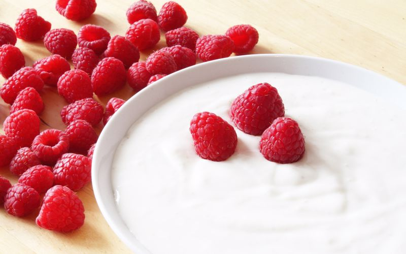

EVDE YOĞURT NASIL YAPILIR?EV YAPIMI YOĞURDUN FAYDALARI NELERDİR?

bu yazımızda ev yapımı yoğurt nasıl yapılırı anlatıyoruz.
Yoğurt yapmak için gerekli malzemeler
Evde yoğurt nasıl yapılır?
Evde yapımı yoğurdun faydaları nelerdir?
Probiyotik deposudur
Ev yapımı yoğurt probiyotik olarak dışarıdaki yoğurtlardan oldukça zengindir.
Kemikleri güçlendirir
İçindeki kalsiyum sayesinde özellikle çocuklar olmak üzere herkesin kemiklerini güçlendirir.
Gelişim çağında bir çocuğunuz varsa mutlaka düzenli olarak yoğurt yedirin.Maalesef yaş
ilerledikçe osteoporoz yani kemik erimesi oluşabiliyor.Kemik erimesini engelleyebilmek için
yine düzenli olarak yoğurt tüketmeniz gerekmektedir.
Bağışıklık sistemini güçlendirir
Probiyotik,kalsiyum gibi birsürü yararlı özellikler içeren yoğurt bu sayede bağışıklık sistemini
de güçlendirir.Böylece hastalıklara karşı direnciniz artar.
Sivilcelere iyi gelir
Yaz ayında özellikle sıkça sivilce ile karşılaşırız.Sivilce için değişik maskeler almak yerine
ev yapımı yoğurdunuz ile sivilceleri yenebilirsiniz.
Tansiyonunuzu dengeler
Yapılan bilimsel bir çalışmada düzenli olarak ev yoğurdu tüketenlerin tansiyonu tüketmeyenlere
göre oldukça sağlıklıdır.
Tatlı krizinizi yok eder
Bişeyler yediğiniz halde hayla tatlılara,aburcuburlara mı dalıyorsunuz?O zaman size ev yapımı
yoğurdu tavsiye edebilirim.Hem normal yoğurtlardan daha lezzetli hem de içerdiği özellikler
sayesinde tatlı krizinizi yok eder.
Spordan sonra mutlaka yoğurt yiyin
Neden mi?Çünkü yukarıda da bahsettiğim gibi yoğurt kemikleri oldukça güçlendirir ve iyileştirir.
Sporda kemikleriniz oldukça yorulabilir ve yoğurt kemiklerinizin kendini toparlamasına yardımcı olur.